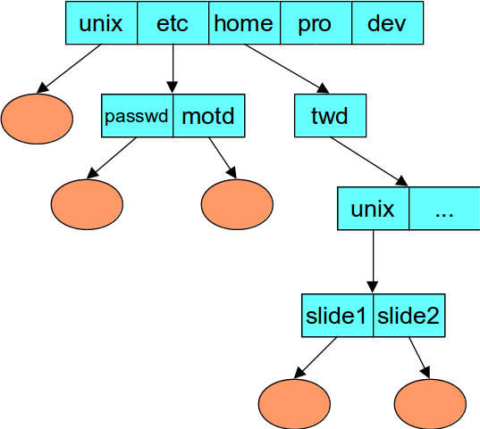
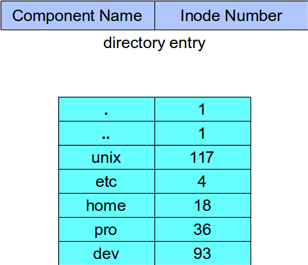

Files are made larger by writing beyond their current end
Files are grouped into directories
Directories

Directory Representation

Interface to the Programmer
Open a file (read, write, read-write) modes
fd = open("file",O_RDONLY);
Read/Write the file
size = read(fd,buffer,n)
size = write(fd,buffer,n);
Close the file
close(fd);
File Access Permissions
Who's allowed to do what?
Who?
user (owner)
group
others (rest of the world)
What?
read
write
execute
Permissions Example
% ls -lR
.:
total 2
drwxr-x--x 2 snt adm 1024 Dec 17 13:34 A
drwxr----- 2 snt adm 1024 Dec 17 13:34 B
./A:
total 1
-rw-rw-rw- 1 snt adm 593 Dec 17 13:34 x
./B:
total 2
-r--rw-rw- 1 snt adm 446 Dec 17 13:34 x
-rw----rw- 1 trina adm 446 Dec 17 13:45 y